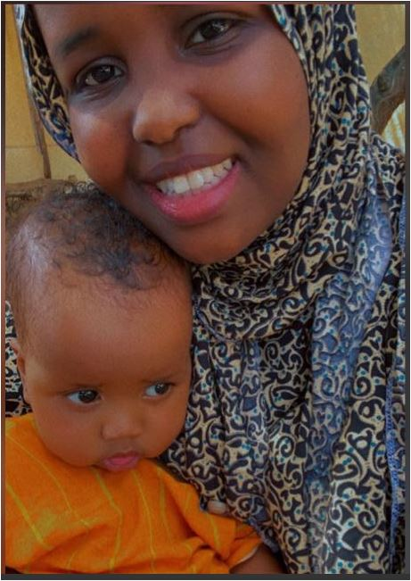

THE MOTHER OF NATIONS
Once upon a time, in the vast and beautiful lands of Somalia, there was a young woman named Ubah Gabow. With her enchanting smile, radiant eyes, and a heart filled with dreams, she possessed an unequal beauty that emanated from deep within her soul.
Ubah was a beacon of hope and inspiration to her loved ones and community, known for her kindness, intelligence, and unwavering determination.
From an early age, Ubah harbored a burning desire to learn and accomplish great things in her life. She realized that education held the key to transforming not only her own destiny but also the future of her beloved homeland. Driven by this vision, she set her sights on the United States, a land renowned for its vast knowledge and countless opportunities.
Leaving behind her family and familiar surroundings, Ubah embarked on a courageous journey to the USA. filled with perseverance and resilience. She embraced the challenges that came her way, immersing herself in various subjects, eager to expand her knowledge and understanding of the world.
In the present, Ubah Gabow has become a symbol of strength and progress for the Somali community in the United States. Through her tireless efforts and dedication, she had established herself as a trailblazer and a leader, advocating for the rights and empowerment of her people. Ubah's wisdom, gained through her own experiences, enabled her to provide guidance and support to those who sought her counsel.
But life had an unexpected twist in store for Ubah. While pursuing her education, she crossed paths with a man nicknamed “The Lion Heart”. They were drawn to each other's intelligence, way of looking at life, dedication, ambition, and shared passion for making a difference.
Love blossomed between them, and Ubah soon realized that this man called “The Lion Heart” was her soulmate, her guide and her partner for the rest of her life.
As they graduated and started their careers, Ubah and “The Lion Heart” faced numerous challenges. They encountered skepticism, prejudice, and setbacks from loved ones, friends, and strangers due to their different religions and cultures and other minor issues, but their shared love, vision and unwavering commitment to their purpose and each other, propelled them forward.
Together, they worked tirelessly to build bridges between those who opposed them and anyone Allah would put in their path, advocating for the love to God, equality, justice, and education. Years passed, and Ubah's impact reverberated far beyond her initial aspirations. She became a revered figure not only in her community but across the globe.
She channeled her knowledge and experiences together with “The Lion Heart,” raising a family of seven children, nurturing them to be strong minded, compassionate and knowledgeable individuals who shared her values.
Ubah's deep love for “The Lion Heart” remained steadfast throughout the years, serving as an anchor to him in the stormiest and hardest of times. Their union exemplified their deep love, mutual respect, support, and unwavering dedication to each other.
As her seven children grew, they witnessed the incredible love between their parents, learning valuable lessons about commitment, sacrifice, and the power of unity.
Allah had a grand plan for her, far beyond her imagination. In the years to come, Ubah would be known as: “THE MOTHER OF NATIONS AND TONGUES”, her influence transcending borders and cultures. She would be remembered for centuries to come, not only for her physical beauty but for the beauty of her character and spirit.
As Ubah's influence continued to expand once known as the "Mother of Nations and Tongues." Her wisdom, courage, fairness, and kindness became legendary. She embraced her role as a mother to countless individuals from diverse backgrounds, offering guidance, support, and an unwavering belief in their potential.
Centuries later, Ubah Gabow's legacy remains alive and thriving. Her teachings and values continue to inspire generations to come. The impact she made on the world reverberates through the corridors of history, reminding humanity of the transformative power of love, education, and compassion.
Ubah Gabow, the young Somali girl who embarked on a journey to learn and accomplish great things, evolved into an extraordinary woman whose influence transcended time. Her story serves as a testament to the boundless potential that lies within every individual, and the remarkable impact one person can have on others and the world.
Ubah Gabow